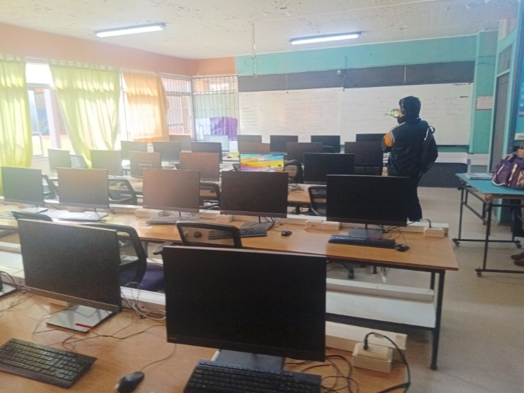
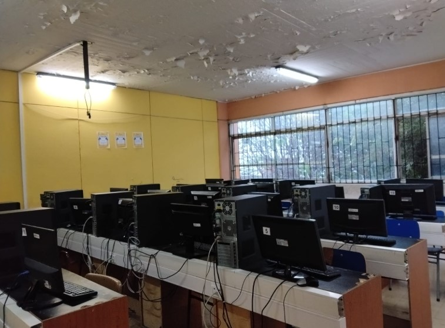

RESPONSABLE
Juan Acevedo
Profesor a cargo de los laboratorios y de distintas actividades relacionadas con el área de especialidad.
INFORMACIÓN DEL LICEO
Conoce los espacios destinados al aprendizaje práctico, programación y desarrollo de actividades tecnológicas del liceo.
RESPONSABLE
Profesor a cargo de los laboratorios y de distintas actividades relacionadas con el área de especialidad.
MANTENCIÓN
Técnico encargado de la mantención y funcionamiento de los equipos y espacios de los laboratorios.
ESPACIOS DISPONIBLES
Selecciona un laboratorio para consultar información más detallada, fotografías y horarios de uso.

LABORATORIO 01
Espacio equipado con computadores de buen rendimiento, utilizado principalmente para actividades de programación y otras asignaturas de la especialidad.
Ver laboratorio →
LABORATORIO 02
Espacio utilizado para diferentes actividades académicas y trabajos relacionados con programación.
Ver laboratorio →
LABORATORIO 03
Espacio que cuenta con equipos que utilizan Ubuntu y que presenta un rendimiento diferente al de otros laboratorios del establecimiento.
Ver laboratorio →
LABORATORIO 04
Espacio con equipos de buen rendimiento, utilizado para diferentes actividades académicas y de especialidad.
Ver laboratorio →
LABORATORIO 05
Espacio utilizado habitualmente por distintos cursos del liceo para realizar actividades académicas.
Ver laboratorio →ORGANIZACIÓN
Los laboratorios son utilizados para desarrollar actividades prácticas y complementar los contenidos trabajados durante las clases.
En las páginas individuales de cada laboratorio se puede consultar información específica, fotografías y horarios.